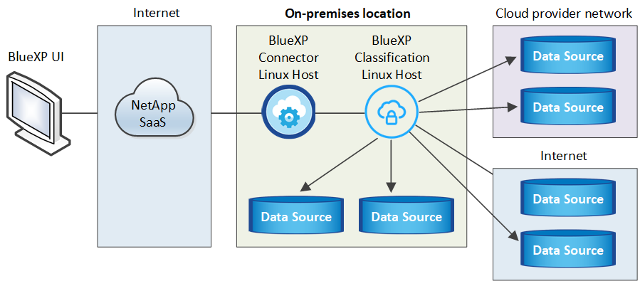
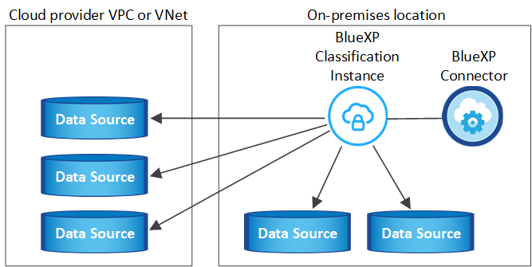
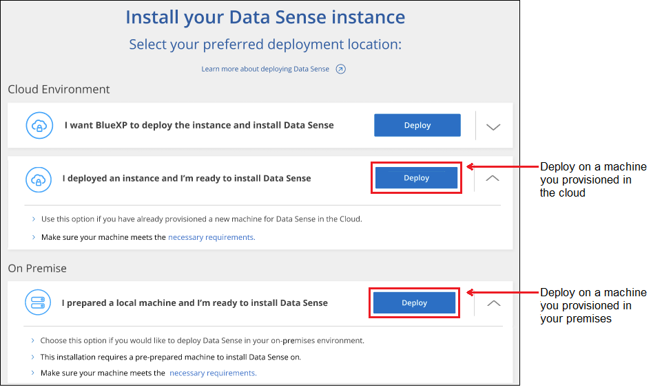
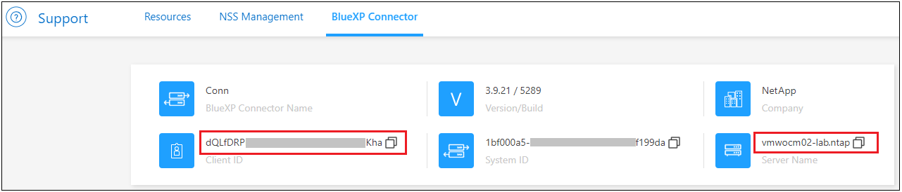

リリースノート
リリースノート
インターネットにアクセスできるホストにBlueXP分類をインストールします
 変更を提案
変更を提案
いくつかの手順を実行して、ネットワーク内のLinuxホスト、またはインターネットにアクセスできるクラウド内のLinuxホストにBlueXP分類をインストールします。このインストールの一環として、Linuxホストをネットワークまたはクラウドに手動で導入する必要があります。
オンプレミス環境は、同じくオンプレミスにあるBlueXP分類インスタンスを使用してオンプレミスのONTAP システムをスキャンする場合に適したオプションですが、これは必須ではありません。どのインストール方法を選択しても、ソフトウェアはまったく同じように機能します。
BlueXPの分類インストールスクリプトでは、まず、システムと環境が必要な前提条件を満たしているかどうかが確認されます。前提条件がすべて満たされている場合は、インストールが開始されます。BlueXP分類のインストールとは別に前提条件を確認する場合は、前提条件のみをテストする別のソフトウェアパッケージをダウンロードできます。 "LinuxホストでBlueXPのインストール準備が完了しているかどうかを確認する方法を説明します"。
社内_のLinuxホスト_への一般的なインストールには、次のコンポーネントと接続があります。

cloud_内のLinuxホストへの一般的なインストールには、次のコンポーネントと接続があります。

ペタバイト規模のデータをスキャンする大規模な構成では、複数のホストを含めて処理能力を追加できます。複数のホストシステムを使用する場合、プライマリシステムは_Manager node_と呼ばれ、追加の処理能力を提供する追加システムは_Scanner Node_と 呼ばれます。
また、次のことも可能です "インターネットにアクセスできないオンプレミスサイトにBlueXPの分類をインストールします" 完全にセキュアなサイトに。
クイックスタート
これらの手順を実行すると、すぐに作業を開始できます。また、残りのセクションまでスクロールして詳細を確認することもできます。
 コネクタを作成します
コネクタを作成しますコネクタがない場合は、 "コネクタをオンプレミスに導入" ネットワーク内のLinuxホスト、またはクラウド内のLinuxホスト。
クラウドプロバイダを使用してコネクタを作成することもできます。を参照してください "AWS でコネクタを作成する"、 "Azure でコネクタを作成する"または "GCP でコネクタを作成する"。
 前提条件を確認する
前提条件を確認する環境が前提条件を満たしていることを確認します。これには、インスタンスのアウトバウンドインターネットアクセス、コネクタとBlueXPのポート443経由の分類間の接続などが含まれます。 すべてのリストを参照してください。
とを満たす Linux システムも必要です 次の要件があります。
 BlueXP分類をダウンロードして導入
BlueXP分類をダウンロードして導入NetApp Support Site からCloud BlueXP分類ソフトウェアをダウンロードし、使用するLinuxホストにインストーラファイルをコピーします。インストールウィザードを起動し、画面の指示に従ってBlueXP分類インスタンスを導入します。
 BlueXP分類サービスにサブスクライブします
BlueXP分類サービスにサブスクライブしますBlueXPで分類されてスキャンされる最初の1TBのデータは、30日間無料です。そのあともデータのスキャンを続行するには、クラウドプロバイダ Marketplace またはネットアップの BYOL ライセンスのサブスクリプションが必要です。
コネクタを作成します
BlueXPをインストールして使用するには、BlueXPコネクタが必要です。ほとんどの場合、BlueXPの分類をアクティブ化する前にコネクタがセットアップされていることがほとんどです "BlueXPの機能にはコネクタが必要です"ただし、ここで設定する必要がある場合もあります。
クラウドプロバイダ環境で作成する場合は、を参照してください "AWS でコネクタを作成する"、 "Azure でコネクタを作成する"または "GCP でコネクタを作成する"。
特定のクラウドプロバイダに導入されているコネクタを使用する必要がある場合は、次のような状況があります。
-
AWSのCloud Volumes ONTAP 、Amazon FSx for ONTAP 、またはAWS S3バケット内のデータをスキャンする場合は、AWSのコネクタを使用します。
-
AzureのCloud Volumes ONTAP またはAzure NetApp Files でデータをスキャンする場合は、Azureのコネクタを使用します。
Azure NetApp Files の場合は、スキャンするボリュームと同じ領域に配置する必要があります。
-
GCP の Cloud Volumes ONTAP でデータをスキャンする場合は、 GCP のコネクタを使用します。
オンプレミスのONTAP システムでは、ネットアップ以外のファイル共有、汎用のS3オブジェクトストレージ、データベース、OneDriveフォルダ、SharePointアカウント、Googleドライブアカウントを、これらのクラウドコネクタのいずれかを使用してスキャンできます。
また、次のことも可能です "コネクタをオンプレミスに導入" ネットワーク内のLinuxホストまたはクラウド内のLinuxホスト。BlueXP分類をオンプレミスにインストールすることを計画している一部のユーザは、コネクタをオンプレミスにインストールすることもできます。
ご覧のように、を使用する必要がある状況もあります "複数のコネクタ"。
BlueXP分類をインストールするときは、コネクタシステムのIPアドレスまたはホスト名が必要です。この情報は、コネクタをオンプレミスにインストールした場合に表示されます。コネクタがクラウドに導入されている場合は、BlueXPコンソールで[ヘルプ]アイコンをクリックし、[サポート]を選択して、[ BlueXPコネクタ*]をクリックします。
Linux ホストシステムを準備
BlueXP分類ソフトウェアは、特定のオペレーティングシステム要件、RAM要件、ソフトウェア要件などを満たすホストで実行する必要があります。Linuxホストは、自社ネットワークまたはクラウドに配置できます。
BlueXPの分類を継続して実行できることを確認します。BlueXP分類マシンは、データを継続的にスキャンするためにオンのままにする必要があります。
-
BlueXPの分類は、他のアプリケーションと共有するホストではサポートされません。専用のホストである必要があります。
-
オンプレミスでホストシステムを構築する場合は、BlueXP分類スキャンを実行するデータセットのサイズに応じて、3つのシステムサイズの中から選択できます。
システムサイズ CPU RAM（スワップメモリを無効にする必要があります） ディスク 特大
CPU×32
128GBのRAM
1TiB SSDオン/または
-100GiBは/optで利用可能
-895GiBを/var/lib/dockerで使用可能
-5GiB（/tmp大きい
16 CPU
64GBのRAM
500GiB SSDオン/、または
-100GiBは/optで利用可能
-395GiBは/var/lib/dockerで使用可能
-5GiB（/tmp中
8 CPU
32GBのRAM
200GiB SSDオン/、または
-50GiBは/optで利用可能
-145GiBは/var/lib/dockerで使用可能
-5GiB（/tmp小さい
8 CPU
16GB の RAM
100GiB SSDオン/、または
-50GiBは/optで利用可能
-45GiBは/var/lib/dockerで使用可能
-5GiB（/tmp小規模なシステムを使用する場合は制限があることに注意してください。を参照してください "小さいインスタンスタイプを使用しています" を参照してください。
-
BlueXP分類インストール用にコンピューティングインスタンスをクラウドに導入する場合は、上記の「大規模」システム要件を満たすシステムを推奨します。
-
* AWS EC2インスタンスタイプ*：「m6i.4xlarge」を推奨します。 "その他のAWSインスタンスタイプを参照してください"。
-
* Azure VMのサイズ*：「Standard_D16s_v3」を推奨します。 "その他のAzureインスタンスタイプを参照してください"。
-
GCPマシンタイプ:「n2-standard-16」をお勧めします。 "追加のGCPインスタンスタイプを参照してください"。
-
-
* UNIXフォルダ権限*：次の最小UNIX権限が必要です。
フォルダ 最小権限 /tmp
rwxrwxrwt/opt
rwxr-xr-x/var/lib/dockerを使用します
rwx------/usr/lib/systemd/system
rwxr-xr-x -
* オペレーティング・システム * ：
-
次のオペレーティングシステムでは、Dockerコンテナエンジンを使用する必要があります。
-
Red Hat Enterprise Linuxバージョン7.8および7.9
-
CentOSバージョン7.8および7.9
-
Ubuntu 22.04（BlueXP分類バージョン1.23以降が必要）
-
-
次のオペレーティングシステムでは、Podmanコンテナエンジンを使用する必要があります。また、BlueXP分類バージョン1.26以降が必要です。
-
Red Hat Enterprise Linuxバージョン9.0、9.1、9.2
RHEL 9.xを使用している場合、次の機能は現在サポートされていません。
-
タアクサイトテノセツチ
-
分散スキャン（マスタースキャナノードとリモートスキャナノードを使用）
-
-
-
-
* Red Hat Subscription Management *：ホストはRed Hat Subscription Managementに登録されている必要があります。登録されていない場合、システムはインストール時に必要なサードパーティ製ソフトウェアを更新するためのリポジトリにアクセスできません。
-
その他のソフトウェア：BlueXP分類をインストールする前に、次のソフトウェアをホストにインストールする必要があります。
-
使用しているOSに応じて、次のいずれかのコンテナエンジンをインストールする必要があります。
-
Docker Engineバージョン19.3.1以降。 "インストール手順を確認します"。
"こちらのビデオをご覧ください" では、CentOSへのDockerのインストールの簡単なデモをご覧ください。
-
Podmanバージョン4以降。Podmanをインストールするには、システムパッケージを更新します。 (
sudo yum update -y）をクリックし、Podmanをインストールします。 (sudo yum install podman -y）。
-
-
Pythonバージョン3.6以降。 "インストール手順を確認します"。
-
-
* NTPに関する考慮事項*：NetAppでは、ネットワークタイムプロトコル（NTP）サービスを使用するようにBlueXP分類システムを設定することを推奨しています。BlueXP分類システムとBlueXP Connectorシステムの間で時刻が同期されている必要があります。
-
ファイアウォールの考慮事項:使用を計画している場合
firewalld`は、BlueXP分類をインストールする前に有効にすることを推奨します。次のコマンドを実行して設定します `firewalldBlueXPと互換性があることを確認します。firewall-cmd --permanent --add-service=http firewall-cmd --permanent --add-service=https firewall-cmd --permanent --add-port=80/tcp firewall-cmd --permanent --add-port=8080/tcp firewall-cmd --permanent --add-port=443/tcp firewall-cmd --reload
追加のBlueXP分類ホストをスキャナノードとして使用する場合は、この時点でプライマリシステムに次のルールを追加してください。
firewall-cmd --permanent --add-port=2377/tcp firewall-cmd --permanent --add-port=7946/udp firewall-cmd --permanent --add-port=7946/tcp firewall-cmd --permanent --add-port=4789/udp
を有効または更新するたびに、DockerまたはPodmanを再起動する必要があることに注意してください。
firewalld設定：

|
BlueXP分類ホストシステムのIPアドレスは、インストール後に変更することはできません。 |
BlueXPの分類からアウトバウンドのインターネットアクセスを有効にします
BlueXPの分類にはアウトバウンドのインターネットアクセスが必要です。仮想ネットワークまたは物理ネットワークでインターネットアクセスにプロキシサーバを使用している場合は、次のエンドポイントに接続するためのアウトバウンドのインターネットアクセスがBlueXP分類インスタンスにあることを確認してください。
| エンドポイント | 目的 |
|---|---|
ネットアップアカウントを含むBlueXPサービスとの通信 |
|
¥ https://netapp-cloud-account.auth0.com ¥ https://auth0.com |
BlueXP Webサイトとの通信により、ユーザ認証を一元化。 |
https://support.compliance.api.bluexp.netapp.com/\ https://hub.docker.com \ https://auth.docker.io \ https://registry-1.docker.io \ https://index.docker.io/\ https://dseasb33srnrn.cloudfront.net/\ https://production.cloudflare.docker.com/ |
ソフトウェアイメージ、マニフェスト、テンプレートへのアクセス、およびログとメトリックの送信を提供します。 |
ネットアップが監査レコードからデータをストリーミングできるようにします。 |
|
Dockerのインストールに必要なパッケージを提供します。 |
|
http://mirror.centos.org http://mirrorlist.centos.org http://mirror.centos.org/centos/7/extras/x86_64/Packages/container-selinux-2.107-3.el7.noarch.rpm |
CentOSのインストールに必要なパッケージを提供します。 |
http://packages.ubuntu.com/ |
Ubuntuのインストールに必要なパッケージを提供します。 |
必要なすべてのポートが有効になっていることを確認します
コネクタ、BlueXP分類、Active Directory、データソースの間の通信に必要なすべてのポートが開いていることを確認する必要があります。
| 接続タイプ | ポート | 説明 |
|---|---|---|
コネクタ<> BlueXPの分類 |
8080（TCP）、443（TCP）、および80 |
コネクタのファイアウォールルールまたはルーティングルールで、ポート443を介したBlueXP分類インスタンスとの間のインバウンドおよびアウトバウンドトラフィックを許可する必要があります。ポート8080が開いていることを確認し、BlueXPでインストールの進行状況を確認します。 |
Connector <> ONTAP cluster（NAS） |
443（TCP） |
BlueXPはHTTPSを使用してONTAP クラスタを検出しましたカスタムファイアウォールポリシーを使用する場合は、次の要件を満たす必要があります。
|
BlueXP分類<> ONTAP クラスタ |
|
BlueXPの分類には、各Cloud Volumes ONTAP サブネットまたはオンプレミスのONTAP システムへのネットワーク接続が必要です。Cloud Volumes ONTAP のファイアウォールまたはルーティングルールで、BlueXP分類インスタンスからのインバウンド接続を許可する必要があります。 次のポートがBlueXP分類インスタンスに対して開いていることを確認します。
NFSボリュームエクスポートポリシーでは、BlueXP分類インスタンスからのアクセスを許可する必要があります。 |
BlueXPの分類<> Active Directory |
389（TCPおよびUDP）、636（TCP）、3268（TCP）、および3269（TCP） |
社内のユーザに対して Active Directory がすでに設定されている必要があります。また、BlueXPの分類では、CIFSボリュームをスキャンするためにActive Directoryのクレデンシャルが必要です。 Active Directory の次の情報が必要です。
|
複数のBlueXP分類ホストを使用してデータソースのスキャンに必要な処理能力を提供している場合は、追加のポート/プロトコルを有効にする必要があります。 "追加のポート要件を参照してください"。
LinuxホストにBlueXP分類をインストールします
一般的な構成では、ソフトウェアを 1 台のホストシステムにインストールします。 これらの手順を参照してください。

ペタバイト規模のデータをスキャンする大規模な構成では、複数のホストを含めて処理能力を追加できます。 これらの手順を参照してください。

を参照してください Linux ホストシステムの準備 および 前提条件の確認 では、BlueXPに分類を導入する前のすべての要件について説明します。
インスタンスがインターネットに接続されていれば、BlueXP分類ソフトウェアへのアップグレードは自動で実行されます。
|
|
現在、BlueXPの分類では、S3バケット、Azure NetApp Files 、FSx for ONTAP がオンプレミスにインストールされている場合はスキャンできません。このような場合は、BlueXP分類のコネクタとインスタンスを別 々 にクラウドとに導入する必要があります "コネクタを切り替えます" データソースごとに異なる。 |
一般的な構成でのシングルホストインストール
要件を確認し、BlueXP分類ソフトウェアをオンプレミスの単一のホストにインストールする場合は、以下の手順に従ってください。
"こちらのビデオをご覧ください" をクリックして、BlueXP分類のインストール方法を確認してください。
BlueXP分類をインストールすると、すべてのインストールアクティビティがログに記録されます。インストール中に問題が発生した場合は、インストール監査ログの内容を表示できます。に書き込まれます。 /opt/netapp/install_logs/。 "詳細はこちら"。
-
Linux システムがを満たしていることを確認します ホストの要件。
-
システムに前提条件となる2つのソフトウェアパッケージ（Docker EngineまたはPodman、およびPython 3）がインストールされていることを確認します。
-
Linux システムに対する root 権限があることを確認してください。
-
インターネットへのアクセスにプロキシを使用している場合：
-
プロキシサーバー情報(IPアドレスまたはホスト名、接続ポート、接続スキーム: httpsまたはhttp、ユーザー名とパスワード)が必要です。
-
プロキシでTLS代行受信を実行している場合は、TLS CA証明書が格納されているBlueXP分類Linuxシステムのパスを確認しておく必要があります。
-
プロキシは非透過である必要があります。現在、透過プロキシはサポートされていません。
-
ユーザはローカルユーザである必要があります。ドメインユーザはサポートされません。
-
-
オフライン環境が要件を満たしていることを確認します 権限と接続。
-
からBlueXP分類ソフトウェアをダウンロードします "ネットアップサポートサイト"。選択するファイルの名前は* DATASENSE-installer -<version> .tar.gz *です。
-
使用する Linux ホストにインストーラファイルをコピーします (`cp またはその他の方法を使用 ) 。
-
ホストマシンでインストーラファイルを解凍します。次に例を示します。
tar -xzf DATASENSE-INSTALLER-V1.25.0.tar.gz -
BlueXPでは、* Governance > Classification *を選択します。
-
[ データセンスを活動化（ Activate Data sense ） ] をクリックし

-
クラウドで準備したインスタンスとオンプレミスで準備したインスタンスのどちらにBlueXP分類をインストールするかに応じて、該当する*[Deploy]*ボタンをクリックしてBlueXP分類のインストールを開始します。

-
「_Deploy Data Sense on Premises」ダイアログが表示されます。提供されたコマンドをコピーします（例：
sudo ./install.sh -a 12345 -c 27AG75 -t 2198qq）をクリックし、後で使用できるようにテキストファイルに貼り付けます。次に*[閉じる]*をクリックしてダイアログを閉じます。 -
ホストマシンで、コピーしたコマンドを入力して一連のプロンプトに従います。または、必要なすべてのパラメータをコマンドライン引数として指定することもできます。
インストールを正常に完了するには、インストーラによって事前チェックが実行され、システムとネットワークの要件が満たされていることが確認されます。 "こちらのビデオをご覧ください" 事前チェックのメッセージとその影響を理解する。
プロンプトに従ってパラメータを入力します。 完全なコマンドを入力します。 -
手順7でコピーしたコマンドを貼り付けます。
sudo ./install.sh -a <account_id> -c <client_id> -t <user_token>（オンプレミス以外の）クラウドインスタンスにインストールする場合は、を追加します
--manual-cloud-install <cloud_provider>。 -
コネクタシステムからアクセスできるように、BlueXP分類ホストマシンのIPアドレスまたはホスト名を入力します。
-
BlueXPコネクタホストマシンのIPアドレスまたはホスト名を入力して、BlueXP分類システムからアクセスできるようにします。
-
プロンプトが表示されたら、プロキシの詳細を入力BlueXPコネクタですでにプロキシを使用している場合は、BlueXPの分類ではコネクタで使用されるプロキシが自動的に使用されるため、ここでもう一度入力する必要はありません。
または、必要なホストパラメータとプロキシパラメータを指定して、コマンド全体を事前に作成することもできます。
sudo ./install.sh -a <account_id> -c <client_id> -t <user_token> --host <ds_host> --manager-host <cm_host> --manual-cloud-install <cloud_provider> --proxy-host <proxy_host> --proxy-port <proxy_port> --proxy-scheme <proxy_scheme> --proxy-user <proxy_user> --proxy-password <proxy_password> --cacert-folder-path <ca_cert_dir>変数値：
-
_account_id _ = ネットアップアカウント ID
-
client_id=コネクタクライアントID（クライアントIDがない場合は、接尾辞「clients」を追加）
-
user_token= JWTユーザーアクセストークン
-
DS_HOST= BlueXP分類LinuxシステムのIPアドレスまたはホスト名。
-
cm_host= BlueXPコネクタシステムのIPアドレスまたはホスト名。
-
cloud_provider=クラウドインスタンスにインストールする場合は、クラウドプロバイダに応じて「AWS」、「Azure」、または「GCP」を入力します。
-
proxy_host = ホストがプロキシサーバの背後にある場合は、プロキシサーバの IP 名またはホスト名。
-
proxy_port= プロキシサーバに接続するポート（デフォルトは 80 ）です。
-
proxy_scheme= 接続方式： https または http （デフォルト http ）。
-
proxy_user= ベーシック認証が必要な場合、プロキシサーバに接続するための認証されたユーザ。ローカルユーザドメインユーザである必要があります。サポートされていません。
-
proxy_password = 指定したユーザ名のパスワード。
-
ca_cert_dir=追加のTLS CA証明書バンドルを含むBlueXP分類Linuxシステムのパス。プロキシが TLS 代行受信を実行している場合にのみ必要です。
-
BlueXP分類インストーラは、パッケージをインストールして登録し、BlueXP分類をインストールします。インストールには 10~20 分かかります。
ホストマシンとコネクタインスタンスの間にポート8080経由で接続が確立されている場合は、BlueXPのBlueXPの分類タブでインストールの進捗状況を確認できます。
設定ページで、スキャンするデータソースを選択できます。
また可能です "BlueXP分類用のライセンスをセットアップ" 現時点では、30日間の無料トライアルが終了するまで、料金はかかりません。
既存の環境にスキャナノードを追加する
データソースのスキャンに必要なスキャン処理能力が増えた場合は、スキャナノードを追加することができます。マネージャノードをインストールした直後にスキャナノードを追加することも、後でスキャナノードを追加することもできます。たとえば、1つのデータソースのデータ量が6カ月後に2倍または3倍になったことがわかった場合は、データスキャンに役立つ新しいスキャナノードを追加できます。
スキャナノードを追加するには、次の2つの方法があります。
-
すべてのデータソースのスキャンに使用するノードを追加します
-
特定のデータソース、または特定のデータソースグループ（通常は場所に基づく）のスキャンに役立つノードを追加する
デフォルトでは、追加した新しいスキャナノードはすべて、スキャンリソースの一般的なプールに追加されます。これを「デフォルトスキャナグループ」と呼びます。次の図では、6つすべてのデータソースからすべてのデータをスキャンする「デフォルト」グループに、1つのManagerノードと3つのスキャナノードがあります。

スキャナノードがデータソースに物理的に近いデータソースでスキャンするデータソースがある場合は、スキャナノードまたはスキャナノードのグループを定義して、特定のデータソースまたはデータソースのグループをスキャンできます。次の図では、1つのマネージャーノードと3つのスキャナーノードがあります。
-
Managerノードは「デフォルト」グループにあり、1つのデータソースをスキャンしています
-
スキャナノード1は「United States」グループに属し、2つのデータソースをスキャンしています
-
スキャナノード2および3は「ヨーロッパ」グループに属し、3つのデータソースのスキャンタスクを共有します

BlueXPの分類スキャナグループは、データが格納される個別の地理的領域として定義できます。BlueXP分類スキャナノードは世界中に複数導入でき、ノードごとにスキャナグループを選択できます。このようにすると、各スキャナノードは最も近いデータをスキャンします。スキャナノードがデータに近いほど、データのスキャン時のネットワークレイテンシができるだけ低減されるため、データの読み取り速度が向上します。
BlueXPの分類に追加するスキャナグループとその名前を選択できます。BlueXPの分類では、「Europe」という名前のスキャナグループにマッピングされたノードがヨーロッパに導入されるわけではありません。
追加のBlueXP分類スキャナノードをインストールするには、次の手順を実行します。
-
スキャナノードとして機能するLinuxホストシステムを準備します
-
これらのLinuxシステムにデータセンスソフトウェアをダウンロードします
-
Managerノードでコマンドを実行して、スキャナノードを特定します
-
次の手順に従って、スキャナノードにソフトウェアを展開します（また、特定のスキャナノードに対してオプションで「スキャナグループ」を定義します）。
-
スキャナグループを定義した場合は、Managerノードで次の手順を実行します。
-
「Working _environment To _ scanner _group_config.yml」ファイルを開き、各スキャナグループでスキャンされる作業環境を定義します
-
次のスクリプトを実行して、このマッピング情報をすべてのスキャナノードに登録します。
update_we_scanner_group_from_config_file.sh
-
-
スキャナノードのすべてのLinuxシステムがを満たしていることを確認します ホストの要件。
-
システムに前提条件となる2つのソフトウェアパッケージ（Docker EngineまたはPodman、およびPython 3）がインストールされていることを確認します。
-
Linux システムに対する root 権限があることを確認してください。
-
環境が要件を満たしていることを確認します 権限と接続。
-
追加するスキャナノードホストのIPアドレスを確認しておく必要があります。
-
BlueXP Classification ManagerノードのホストシステムのIPアドレスが必要です
-
コネクタシステムのIPアドレスまたはホスト名、ネットアップアカウントID、コネクタクライアントID、およびユーザアクセストークンが必要です。スキャナグループを使用する場合は、アカウントの各データソースの作業環境IDを確認しておく必要があります。この情報を取得するには、以下の*必要条件ステップ*を参照してください。
-
すべてのホストで次のポートとプロトコルを有効にする必要があります。
ポート プロトコル 説明 2377
TCP
クラスタ管理通信
7946
tcp 、 udp です
ノード間通信
4789
UDP
オーバーレイネットワークトラフィック
50
ESP
暗号化された IPsec オーバーレイネットワーク（ ESP ）トラフィック
111
tcp 、 udp です
ホスト間でファイルを共有するための NFS サーバ（各スキャナノードからマネージャノードに必要）
2049
tcp 、 udp です
ホスト間でファイルを共有するための NFS サーバ（各スキャナノードからマネージャノードに必要）
-
使用するポート
firewalldBlueXP分類マシンでは、BlueXP分類をインストールする前に有効にすることを推奨します。次のコマンドを実行して設定しますfirewalldBlueXPと互換性があることを確認します。firewall-cmd --permanent --add-service=http firewall-cmd --permanent --add-service=https firewall-cmd --permanent --add-port=80/tcp firewall-cmd --permanent --add-port=8080/tcp firewall-cmd --permanent --add-port=443/tcp firewall-cmd --permanent --add-port=2377/tcp firewall-cmd --permanent --add-port=7946/udp firewall-cmd --permanent --add-port=7946/tcp firewall-cmd --permanent --add-port=4789/udp firewall-cmd --reload
を有効または更新するたびに、DockerまたはPodmanを再起動する必要があることに注意してください。
firewalld設定：
次の手順に従って、スキャナノードの追加に必要なネットアップアカウントID、コネクタクライアントID、コネクタサーバ名、およびユーザアクセストークンを取得します。
-
BlueXPのメニューバーで、*アカウント>アカウントの管理*をクリックします。

-
_アカウントID_をコピーします。
-
BlueXPメニューバーで、[ヘルプ]>[サポート]>[ BlueXPコネクタ*]をクリックします。

-
Connector_Client ID_と_サーバ名_をコピーします。
-
スキャナグループを使用する場合は、BlueXP分類の[設定]タブで、スキャナグループに追加する各作業環境の作業環境IDをコピーします。
 ページに表示されるWorking Environment IDのスクリーンショット。"]
ページに表示されるWorking Environment IDのスクリーンショット。"] -
にアクセスします "APIドキュメント開発者ハブ" [Learn how to authenticate(認証方法を確認する)]をクリック

-
「ユーザー名」と「パスワード」パラメータのアカウント管理者のユーザー名とパスワードを使用して、認証手順に従ってください。
-
次に、応答から_access token_をコピーします。
-
BlueXP Classification Managerノードで、スクリプト「add_scanner_node.sh」を実行します。たとえば、次のコマンドはスキャナノードを2つ追加します。
sudo ./add_scanner_node.sh -a <account_id> -c <client_id> -m <cm_host> -h <ds_manager_ip> -n <node_private_ip_1,node_private_ip_2> -t <user_token>変数値：
-
_account_id _ = ネットアップアカウント ID
-
client_id=コネクタクライアントID（前提条件ステップでコピーしたクライアントIDに接尾辞「clients」を追加）
-
cm_host=コネクタシステムのIPアドレスまたはホスト名
-
DS_manager_IP= BlueXP Classification ManagerノードシステムのプライベートIPアドレス
-
node_private_IP= BlueXP分類スキャナノードシステムのIPアドレス（複数のスキャナノードIPはカンマで区切ります）
-
user_token= JWTユーザーアクセストークン
-
-
add_scanner_nodeスクリプトが完了する前に、スキャナノードに必要なインストールコマンドを示すダイアログが表示されます。コマンドをコピーします（例：
sudo ./node_install.sh -m 10.11.12.13 -t ABCDEF1s35212 -u red95467j）を入力し、テキストファイルに保存します。 -
各 * スキャナノードホストで：
-
データセンスインストーラファイル(DATASENSE-installer -<version> .tar.gz)をホストマシンにコピーします(scpなどの方法を使用)。
-
インストーラファイルを解凍します。
-
手順2でコピーしたコマンドを貼り付けて実行します。
-
スキャナノードを「スキャナグループ」に追加する場合は、パラメータ*-r <scanner_group_name>*をコマンドに追加します。それ以外の場合は、スキャナノードが「デフォルト」グループに追加されます。
すべてのスキャナノードでインストールが完了し、それらのノードがマネージャノードに参加したら、「add_scanner_node.sh」スクリプトも終了します。インストールには10~20分かかることがあります。
-
-
スキャナグループにスキャナノードを追加した場合は、マネージャノードに戻り、次の2つのタスクを実行します。
-
「/opt/netapp/Datasense/working _environment_To-scanner _group_config.yml」ファイルを開き、スキャナグループが特定の作業環境をスキャンするためのマッピングを入力します。データソースごとに_Working Environment ID_が必要になります。たとえば、次のエントリでは、2つの作業環境を「ヨーロッパ」スキャナグループに、2つを「United States」スキャナグループに追加します。
scanner_groups: europe: working_environments: - "working_environment_id1" - "working_environment_id2" united_states: working_environments: - "working_environment_id3" - "working_environment_id4"リストに追加されていない作業環境は、「デフォルト」グループによってスキャンされます。「デフォルト」グループには、少なくとも1つのマネージャまたはスキャナノードが必要です。
-
次のスクリプトを実行して、このマッピング情報をすべてのスキャナノードに登録します。
/opt/netapp/Datasense/tools/update_we_scanner_group_from_config_file.sh
-
BlueXPの分類は、ManagerノードとScannerノードで設定され、すべてのデータソースがスキャンされます。
設定ページで、スキャンするデータソースを選択できます（まだ選択していない場合）。スキャナグループを作成した場合は、各データソースがそれぞれのグループのスキャナノードによってスキャンされます。
各作業環境のスキャナグループ名は、設定ページに表示されます。
ページに表示されるWorking Environment IDのスクリーンショット。"]
また、すべてのスキャナグループのリスト、および[設定]ページの下部にあるグループ内の各スキャナノードのIPアドレスとステータスを表示することもできます。

可能です "BlueXP分類用のライセンスをセットアップ" 現時点では、30日間の無料トライアルが終了するまで、料金はかかりません。
大規模構成向けのマルチホストインストール
ペタバイト規模のデータをスキャンする大規模な構成では、複数のホストを含めて処理能力を追加できます。複数のホストシステムを使用する場合、プライマリシステムは _Managernode_name と呼ばれ、追加の処理能力を提供する追加システムは _Scanner Node_と 呼ばれます。
複数のオンプレミスホストにBlueXP分類ソフトウェアを同時にインストールする場合は、次の手順に従います。この方法で複数のホストを導入する場合、「スキャナグループ」は使用できません。
-
Manager ノードと Scanner ノードのすべての Linux システムが、を満たしていることを確認します ホストの要件。
-
システムに前提条件となる2つのソフトウェアパッケージ（DockerまたはPodman Engine、およびPython 3）がインストールされていることを確認します。
-
Linux システムに対する root 権限があることを確認してください。
-
環境が要件を満たしていることを確認します 権限と接続。
-
使用するスキャナノードホストの IP アドレスを確認しておく必要があります。
-
すべてのホストで次のポートとプロトコルを有効にする必要があります。
ポート プロトコル 説明 2377
TCP
クラスタ管理通信
7946
tcp 、 udp です
ノード間通信
4789
UDP
オーバーレイネットワークトラフィック
50
ESP
暗号化された IPsec オーバーレイネットワーク（ ESP ）トラフィック
111
tcp 、 udp です
ホスト間でファイルを共有するための NFS サーバ（各スキャナノードからマネージャノードに必要）
2049
tcp 、 udp です
ホスト間でファイルを共有するための NFS サーバ（各スキャナノードからマネージャノードに必要）
-
の手順 1~7 を実行します シングルホストインストール マネージャーノード。
-
手順 8 で示したように、インストーラからプロンプトが表示されたら、一連のプロンプトに必要な値を入力するか、必要なパラメータをコマンドライン引数としてインストーラに指定することができます。
シングルホストのインストールで使用できる変数に加えて、新しいオプション * -n <Node_IP> * を使用してスキャナノードの IP アドレスを指定します。複数のスキャナノードの IP はカンマで区切って指定します。
たとえば、次のコマンドは3つのスキャナノードを追加します。
sudo ./install.sh -a <account_id> -c <client_id> -t <user_token> --host <ds_host> --manager-host <cm_host> -n <node_ip1>,<node_ip2>,<node_ip3> --proxy-host <proxy_host> --proxy-port <proxy_port> --proxy-scheme <proxy_scheme> --proxy-user <proxy_user> --proxy-password <proxy_password> -
マネージャノードのインストールが完了する前に、スキャナノードに必要なインストールコマンドがダイアログに表示されます。コマンドをコピーします（例：
sudo ./node_install.sh -m 10.11.12.13 -t ABCDEF-1-3u69m1-1s35212）を入力し、テキストファイルに保存します。 -
各 * スキャナノードホストで：
-
データセンスインストーラファイル(DATASENSE-installer -<version> .tar.gz)をホストマシンにコピーします(scpなどの方法を使用)。
-
インストーラファイルを解凍します。
-
手順 3 でコピーしたコマンドを貼り付けて実行します。
すべてのスキャナノードでインストールが完了し、それらのノードがマネージャノードに参加したら、マネージャノードのインストールも完了します。
-
BlueXP分類インストーラがパッケージのインストールを完了し、インストールを登録します。インストールには 10~20 分かかります。
設定ページで、スキャンするデータソースを選択できます。
また可能です "BlueXP分類用のライセンスをセットアップ" 現時点では、30日間の無料トライアルが終了するまで、料金はかかりません。